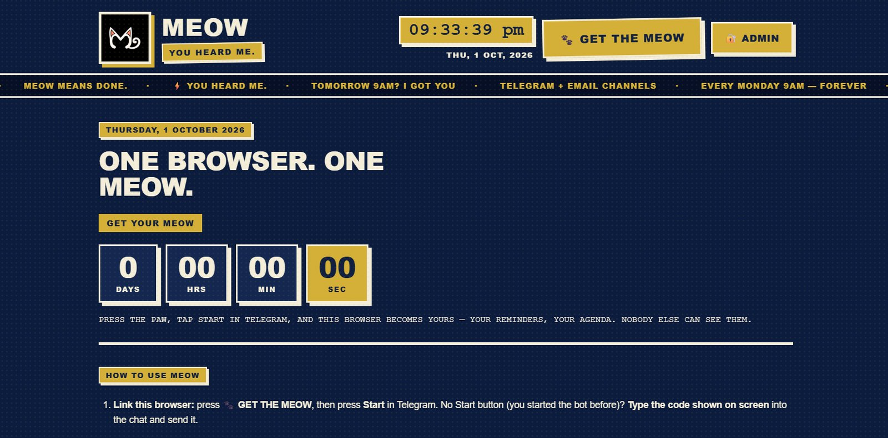

Project 03 · 2026

 Meow Reminder
Meow Reminder
You heard me — type it here, your Telegram bot says it back on time.

Project details
Meow Reminder is a single-container Node.js app where your Telegram account is the login. Press the paw, send /start with a one-time code, and that browser becomes yours — reminders, agenda, nobody else’s. “Call father tomorrow 9am” is parsed into a due date by chrono-node; “every day 9am” gets its own repeat rules with one nextOccurrence() truth shared by the scheduler, the panel and manual done. A 15-second tick fires due reminders through Telegram, email or the demo channel; the Telegram poller long-polls for enrollments; every write goes straight into MongoDB Atlas with local JSON as the fallback. The admin page manages bots, users and the public LEDGER — and 64 tests prove the sync, the repeats and the ledger.
Built with
- Node.js
- Express
- Telegram Bot API
- MongoDB Atlas
The problem, in structure
- Reminders demand an app. Stores, sign-ups, notification permissions — all before a single reminder exists.
- and you still type the time by hand
- “Tomorrow 9am” becomes a form. Date pickers bury natural language under taps.
- Accounts fragment the list. Phone and laptop show two different tomorrows.
- Free hosts punish daemons. Sleep, 30-second caps and read-only disks kill schedulers.
- A crash forgets you. In-memory to-do lists die with the process.
How it answers each one
- Telegram is the app. You already have it — /start plus a 15-minute code enrolls you; the bot is the notification channel too.
- Type it like you’d say it. chrono-node reads “tomorrow 9am”; “every day 9am” maps to four recurrence shapes with one next-occurrence truth.
- Identity is your chat id. A signed per-browser cookie (HMAC, 90 days) means every linked browser shows the same owner-scoped list — others see nothing.
- One thin container. Express, a 15-second tick and a long-poll loop — nothing a host punishes. Deplexo keeps it always-on; a health check keeps it honest.
- Write-through from tick one. Every change lands in MongoDB Atlas (local JSON fallback); a rebuilt container reloads from the cloud. 64/64 tests agree.
Architecture
Next phase
- A WhatsApp channel beside Telegram.
- Quiet hours, respected by the scheduler.
- Voice notes parsed straight into reminders.
- An offline composer that syncs on reconnect.
- Natural-language edits: “move dad’s call to 6pm”.